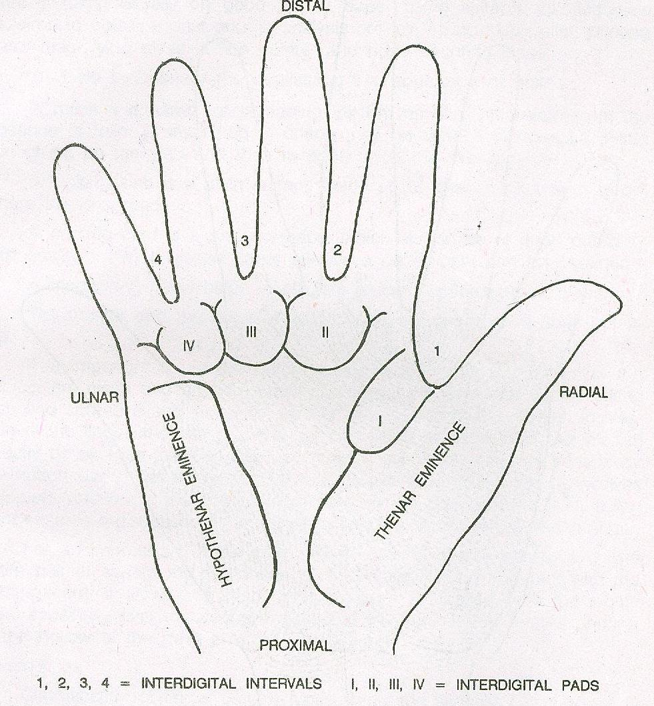
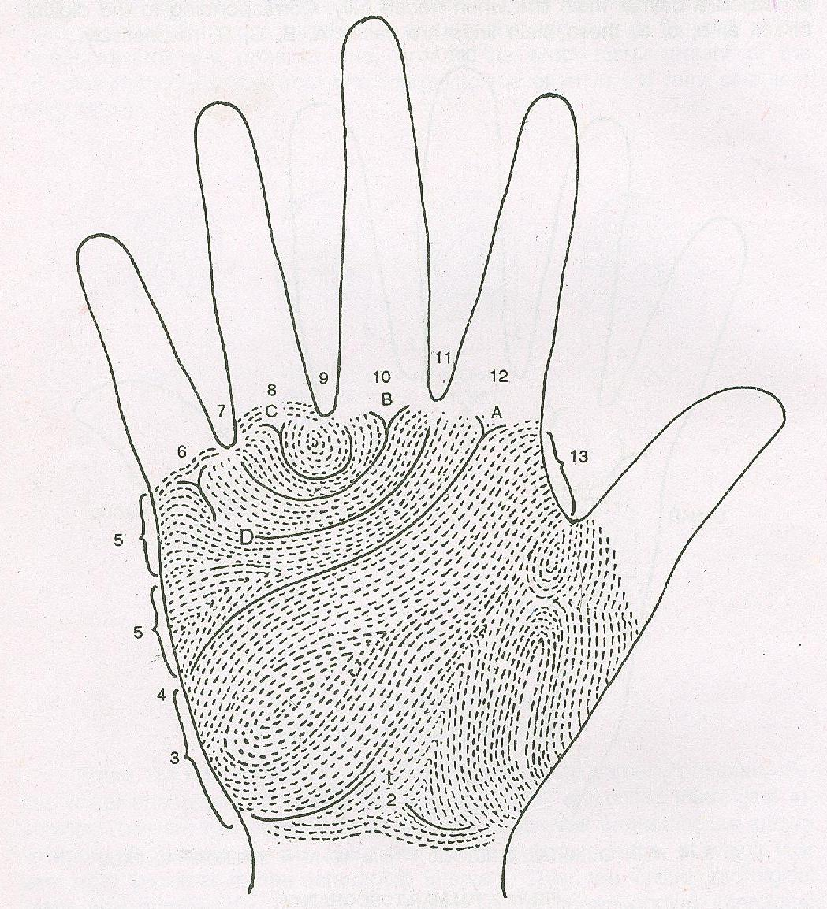

Shakshat Virtual Lab 
INDIAN INSTITUTE OF TECHNOLOGY GUWAHATI
Palmer Topography
There are four astronomical directions in palm, namely proximal, distal, radical and ulnar.

figure 1
The clefts between the digits are called interdigital intervals. They are numbered 1,2,3,4, in the radio ulnar sequence . As shown in the figure1 , there are six elevations on the palmer surface, of which four are lying proximal to interdigital intervals. They are called interdigital pads and numbered I, II,III, IV in relation to the corresponding interdigital intervals. On the base of interdigital pads I there is large prominence occupying a major portion of the proximo-raidal quadrant of the palm. This is the thenar eminence. Lying on the ulnar direction there is an elongated eminence which is called the hypothenar eminence.
Four digital triadii are located on the bases of digits 2,3,4, and 5 and are designated as a,b,c,d in the radio – ulnar sequence.
There is a fifth triradius,which may be more than one in number , towards the proximal margin of the palm. This triradius is called axial triradius and designated by the letter t. The proximal radiant of the digital triradius is called a palmer main line when traces fully. Corresponding to the digital triadii a, b, c, d, these main lined are called A, B, C, D respectively.
Main line formula
The periphery of palm is divided into a series of 14 intervals and points .The area covered by the thenar eminence on the radial side if the axial triradius is position 1. The axial triradius is a point and designated position 2. Likewise all the digital triradii are points and numbered positions 6,8,10, 12 corresponding to tridii d,c,b and a respectively. The area covering from position 2 to the midpoint on the ulnar border around the proximal margin of the hypothenar eminence is position 3.
The midpoint in the ulnar border is position 4. From position 4 to the triradial point 6 is position 5, which is divided into the two equal halves, the proximal half is position 5’ and the distal half is 5”. The interdigital areas are numbered as positions 7, 9, 11, 13 in the ulnar sequence.

figure2
When completely traced, the main lines constitute a skeleton. The terminating position of 4 main lines constitutes the palmar main line formula which is recorded in the order D, C, B, A. To illustrator this point, in Figure2 . for example , the palmer main line formula is 11,9,7,4.